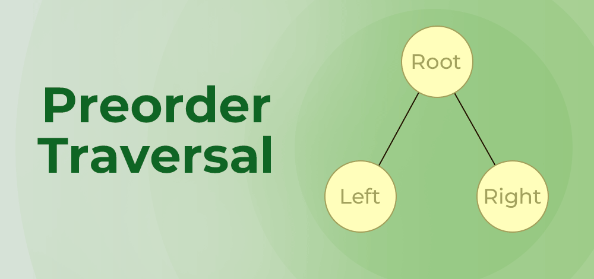
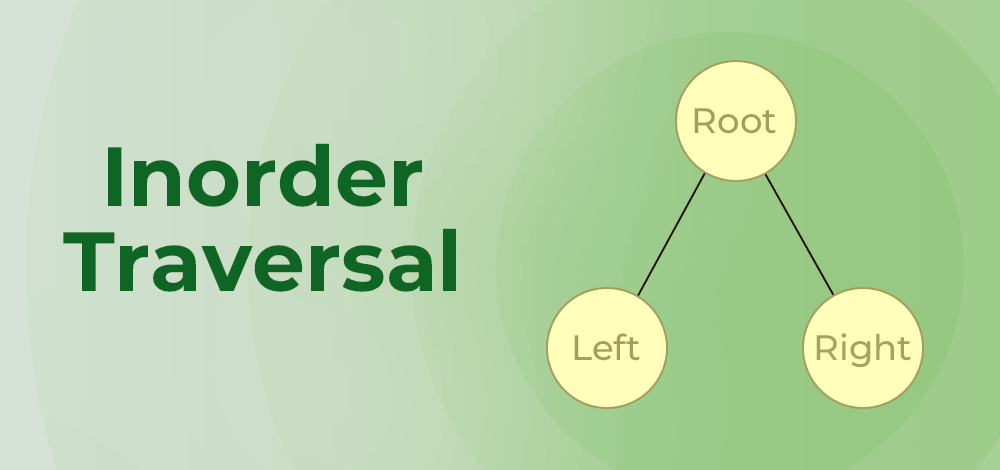
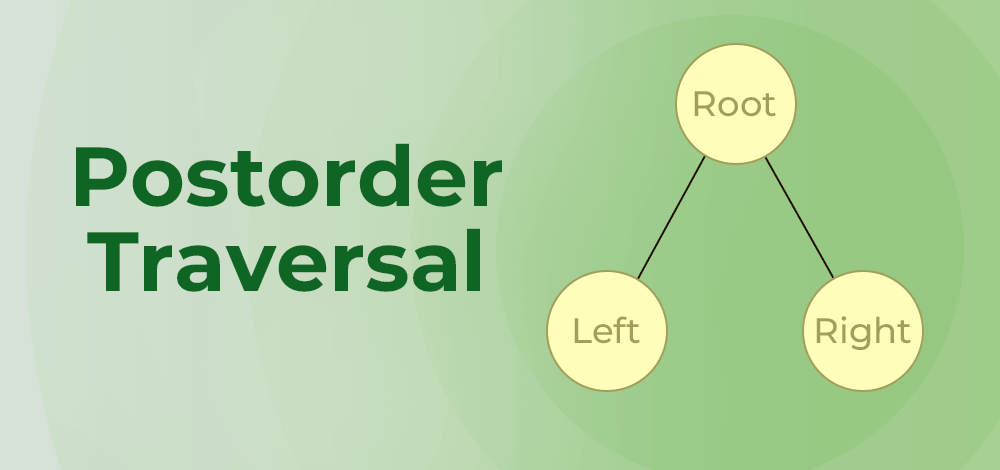

A Binary Search Tree (BST) is a binary tree where each node has at most two children, known as the left child and the right child. It follows the order property where the values in the left subtree are less than the node, and the values in the right subtree are greater than the node.
BST supports efficient searching, insertion, and deletion operations. Inserting a new node involves comparing the data with the root and recursively inserting it into the appropriate subtree. Deleting a node can be complex depending on its children, but generally involves connecting its parent directly to its child or finding a successor node.
Traversal methods like Inorder, Preorder, and Postorder are used to visit nodes in different orders, offering flexibility in data retrieval and processing.
Preorder traversal visits the node first, then its left subtree, and then its right subtree. For example, consider the tree below:
Inorder traversal visits the left subtree first, then the node, and then the right subtree, resulting in nodes sorted in ascending order. For example, consider the tree below:
Postorder traversal visits the left subtree, then the right subtree, and finally the node itself. For example, consider the tree below:
